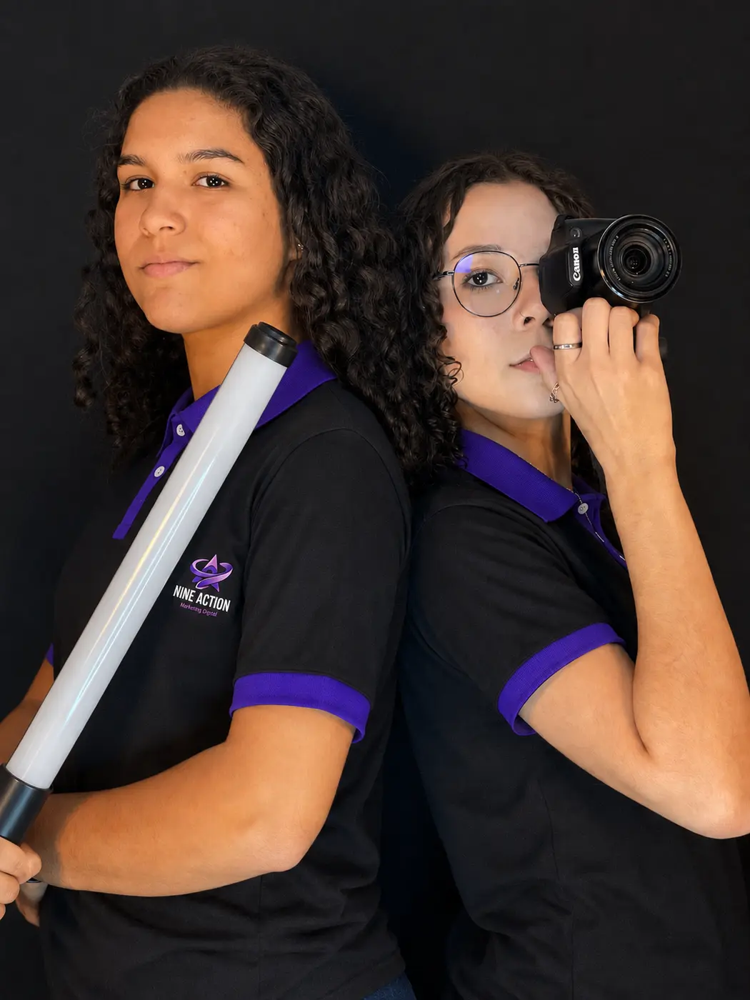

Feito com intenção: uma colagem de fotos, vídeos e peças produzidas pela Nine Action.
Estratégia & Conteúdo
Não é só sobre aparecer. É sobre como sua marca é percebida.
Conectamos estratégia, conteúdo e criatividade para construir uma presença digital com intenção.
Uma marca bem percebida precisa de várias frentes trabalhando juntas. A Nine Action reúne nove.
Serviços
Por que Nine Action? Nove frentes. Uma comunicação conectada.
Contrate uma frente específica ou combine várias em um projeto completo. Toque em cada serviço para ver os detalhes.
Da estratégia à execução, conectamos diferentes frentes da comunicação para que sua marca tenha uma presença mais coerente, criativa e intencional.
Portfólio
Do plano à produção, em vários formatos.
Projetos selecionados
Galeria
Cases
Resultados que dá para conferir.
Números tirados das capturas do Instagram Insights de perfis atendidos. Toque em “Ver captura original” para conferir a fonte.
Visualizações contam cada vez que o conteúdo foi exibido; visualizadores são contas únicas. Os números mostram o desempenho registrado, sem atribuir a causa a um único fator.
Análise básica e gratuita
Vamos olhar para o seu perfil?
Conte para nós o que você deseja melhorar. Vamos entender seu momento e avaliar oportunidades para sua marca se comunicar melhor.
- 01Preencha o formulário. Leva menos de dois minutos.
- 02Envie pelo WhatsApp. Montamos a mensagem com suas respostas; você só confirma o envio.
- 03Nossa equipe analisa. A análise é feita manualmente, por pessoas, olhando o seu perfil.
Nunca pedimos senha ou acesso à sua conta.

Quem somos
Quem planeja também está no set.
A Nine Action nasceu da vontade de unir estratégia, criatividade e execução em uma comunicação que faça sentido para cada marca.
Trabalhamos conectando diferentes frentes de conteúdo e produção para transformar ideias em experiências visuais e digitais. As mesmas pessoas que fazem o briefing estão na gravação, na edição e no acompanhamento, e isso mantém a comunicação coerente do começo ao fim.
- 01Planejamento antes da criação. Cada projeto começa entendendo o negócio, o público e o objetivo.
- 02Produção própria. Foto, vídeo, design e stories feitos pela mesma equipe que define a estratégia.
- 03Proximidade. Conversa direta com quem cuida da sua marca.
- 04Atenção à identidade. Cada entrega respeita a linguagem visual e o tom de cada cliente.
Contato
Sua próxima ideia pode começar aqui.
Conte para nós o que sua marca precisa. Vamos conversar sobre as possibilidades.
Social Media
Feeds que a gente planeja, produz e cuida.
Capturas reais de perfis de clientes. Cada marca com sua linha editorial, sua paleta e seu ritmo de publicação.
Toque em um feed para ampliar